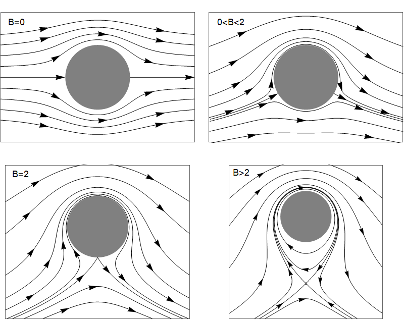
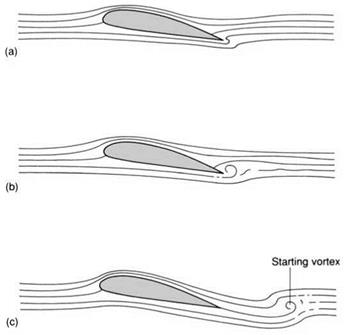

Vortex transport
Contents
35. Vortex transport#
In this section:
How is “vortex stretching” involved in tornado formation?
The persistence of irrotational flow in an inviscid fluid
Can we have lift without drag?
35.1. The vorticity transport equation#
Let us begin with the Navier-Stokes conservation of momentum equation for a conservative body force \(\underline{F}=\nabla\phi\), and follow the same steps outlined in section Section 34.2 to obtain
Since “curlgrad”=0, we can eliminate the head by taking the curl:
The second term can be expanded using vector identities to obtain the following equation for the material derivative of the vorticity:
In an incompressible flow there is no divergence of the velocity field and so we obtain the vorticity transport equation
The first term on the right is called the “vortex stretching” term. It gets its non-zero contribution from the component of the velocity gradient parallel to \(\underline{\omega}\), in which case vortex lines are “stretched” by the velocity field, causing them to spin faster. This effect is involved in the formation of tornadoes.
For two-dimensional flows the vortex stretching term is zero:
Tornado formation
The presence of strong winds near to the ground creates a shear gradient, which can cause the formation of a vortex line as shown in the image below, which is taken from a 1984 research paper. Thermal updrafts can then tilt the vortex tube upwards to form a vertical column of rotating air. The simultaneous stretching effect of the thermal updrafts can cause tornadoes to spin very fast.

Note: It should be recognised that the formation of a vortex line is a viscous phenomenon!
35.2. Vorticity transport in inviscid flows#
If the fluid is inviscid then the vorticity transport equation reduces to:
If the fluid is initially irrotational then the vorticity will be zero along all fluid paths. The Euler equation cannot produce vorticity - it can only maintain it!
For example, this is the case for flows that are started from rest. The implication is that irrotational flows are more common than you might expect. Recall, too that the combination of inviscid and irrotational flow satisfies Laplace’s equation \(\nabla^2\phi=0.\)
However, the assumption of inviscid flow can lead to a paradox, as discussed below.
35.3. An apparent paradox : flow past a cylinder#
Here we will model flow past a cylinder as an inviscid, irrotational flow. By artificially introducing circulation, we will find that we can obtain a lift force without the presence of drag.
35.3.1. Potential flow derivation#
In accordance with the inviscid, irrotational assumptions, we begin with Laplace’s equation \(\nabla^2\phi=0.\) In cylindrical polars we obtain:
You may verify that the following result satisfies this equation, where \(\Gamma\) is an arbitrary constant representing the circulation, and \(U\) is the free stream velocity:
The velocity components \(\left(v_r,v_{\theta}\right)=\left(\frac{\partial\phi}{\partial r},\frac{1}{r}\frac{\partial\phi}{\partial\theta}\right)\) are
Warning
Notice for this solution there is evidently slip on the surface of the cylinder, since
The pattern of streamlines depends on the circulation. If \(\Gamma=0\) then the flow is symmetric, as shown in the top-left figure below, with stagnation points at the fore and aft of the cylinder. As the circulation in the clockwise direction increases, the stagnation points move towards the underside of the cylinder. Eventually, as the circulation is increased still further, the stagnation points coalesce and then move off the surface of the cylinder. The location of the stagnation points can be calculated:

{kind=link}
The cylinder can be mapped via a change of variables (called “conformal mapping”) to derive results for a flat plate or a cambered airfoil. The streamline patterns look similar to what we see here.
35.3.2. Bernoulli’s theorem:#
Since the cylinder is a streamline, and the motion is steady, \(\frac{p}{\rho}+\frac{1}{2} v^2\) is constant on \(r=a\). Therefore on the surface of the cylinder
The pressure distribution is symmetric in the \(y\)-axis, so the net force must be perpendicular to the oncoming stream. The \(y\)-component of the force is \(-p a\sin(\theta)\mathrm{d}\theta\), so the net force is:
We therefore obtain a lift force if there is positive circulation. The fact that there is no net force in the downstream direction (no drag) is known as D’Alembert’s paradox.
35.3.3. Resolving the paradox#
The circulation has been artificially introduced here. There is nothing in the physical setup of this problem that would explain where it comes from. In reality, circulation can arise for a cylinder that is rotating relative to the oncoming stream or for an airfoil with a sharp trailing edge that attacks the oncoming flow an angle. Viscosity is essential. In each case it is the separation of the viscous boundary layer that generates the circulation via vortex shedding.
In the case of a cambered airfoil we see a “starting vortex” created around the trailing edge, which eventually breaks away and sets up an opposing circulation around the airfoil, as shown below.
Comparison of the paradoxical and physical cases gives us insight to suggest that if an airfoil is very well designed to avoid dramatic boundary layer separation, then very low drag forces may indeed be obtained.

{kind=link}
In cases where the development of the starting vortex does not have a preferred direction, such as for a non-rotating cylinder placed in an oncoming stream, we may see a Von Karman street of alternating vortices being shed from the cylinder.
35.4. Chapter exercise#
Look up the meaning of the term “stall” in the context of fluid dynamics, and provide a description of this term in your own words. Draw pictures to illustrate.